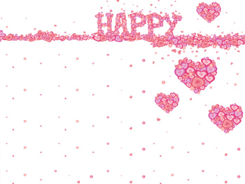

元素的浮动

汉皇重色思倾国，御宇多年求不得。杨家有女初长成，养在深闺人未识。天生丽质难自弃，一朝选在君王侧。
回眸一笑百媚生，六宫粉黛无颜色。春寒赐浴华清池，温泉水滑洗凝脂。侍儿扶起娇无力，始是新承恩泽时。云鬓花颜金步摇，芙蓉帐暖度春宵。春宵苦短日高起，从此君王不早朝。承欢侍宴无闲暇，春从春游夜专夜。后宫佳丽三千人，三千宠爱在一身。金屋妆成娇侍夜，玉楼宴罢醉和春。姊妹弟兄皆列土，可怜光彩生门户。遂令天下父母心，不重生男重生女。骊宫高处入青云，仙乐风飘处处闻。缓歌谩舞凝丝竹，尽日君王看不足。渔阳鼙鼓动地来，惊破霓裳羽衣曲。